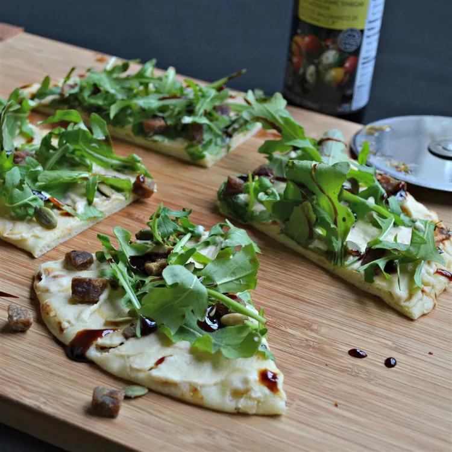

Argula and Hummus Mini Pizzas

Prep time: 10 mins | Total time: 10 mins |Servings: 1
Ingredients
- 2 tablespoons hummus, or to taste
- 1 naan bread
- 1 cup arugula, or to taste
- 1 date, pitted and finely chopped
- 2 teaspoons pumpkin seeds
- 1 teaspoon balsamic vinegar, or to taste
Directions
Step 1
Spread hummus onto naan bread; top with arugula, date, and pumpkin seeds. Drizzle balsamic vinegar over pizza.